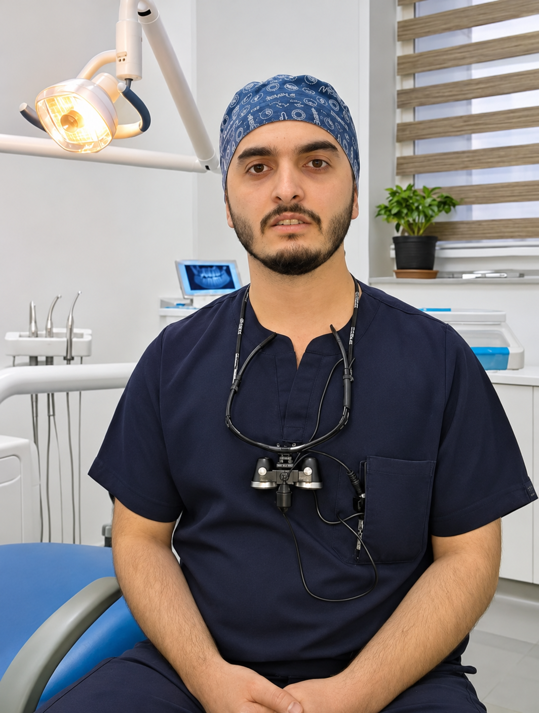

Etimad yaradan rəqəmsal təqdimat.
Dr. Vüsal Həsənli üçün hazırlanmış fərdi vebsayt konsepsiyası. Peşəkar məlumatlar, pasiyentlər üçün aydın naviqasiya və qəbul müraciəti — vahid platformada.
İxtisas və qəbul məlumatları həkimlə təsdiqləndikdən sonra əlavə olunacaq.

Rahat interfeys
Həkim və pasiyent arasında daha rahat əlaqə
Fərdi həkim saytının əsas bölmələri aydın, sürətli və etibarlı istifadəçi təcrübəsinə uyğun hazırlanıb.
Peşəkar profil
Təhsil, ixtisas, klinik təcrübə və sertifikatların təsdiqlənmiş şəkildə təqdimatı.
Qəbul müraciəti
Pasiyent üçün sadə sorğu forması və həkimin təsdiqindən sonra əlaqə kanallarına keçid.
Məlumat və məqalələr
Həkimin təsdiqlədiyi maarifləndirici materiallar, tez-tez verilən suallar və faydalı məlumatlar.
Dr. Vüsal Həsənli
Bu bölmə həkimin peşəkar fəaliyyəti barədə şəffaf və faktlara əsaslanan məlumatların yerləşdirilməsi üçün nəzərdə tutulub. İxtisası, təhsili, iş təcrübəsi və klinika məlumatları hazırda açıq mənbələrdən etibarlı təsdiqlənməyib.
Rəsmi istifadəyə keçid zamanı həkimin təqdim etdiyi təsdiqlənmiş bioqrafiya, iş yeri, professional foto və xidmət istiqamətləri əlavə ediləcək.
- İxtisas və xidmətlərin strukturlaşdırılmış təqdimatı
- Təhsil, peşə təcrübəsi və sertifikatlar
- Qəbul saatları, ünvan və əlaqə məlumatları
Üç sadə addım
Pasiyent üçün asan, həkim üçün səliqəli müraciət axını.
Profili nəzərdən keçirin
Həkimin təsdiqlənmiş məlumatları və xidmət istiqamətləri ilə tanış olun.
Müraciət hazırlayın
Ad, əlaqə vasitəsi və istədiyiniz vaxtı qeyd edin.
Təsdiq gözləyin
Qəbul yalnız həkim və ya klinikanın cavabından sonra təsdiqlənir.
Ən vacib məlumatlar
Bu, həkimin rəsmi vebsaytıdır?
Xeyr. Bu, Dr. Vüsal Həsənli üçün satış təqdimatı məqsədilə hazırlanmış müstəqil demo konsepsiyasıdır.
Həkimin ixtisası və iş yeri harada göstərilir?
Bu məlumatlar təsdiqlənmədiyi üçün hələ daxil edilməyib. Həkim tərəfindən təsdiqləndikdən sonra əlavə ediləcək.
Formadan real tibbi qəbul rezerv etmək olur?
Demo versiyada forma yalnız nümunə müraciət mesajı yaradır; məlumat serverə göndərilmir və real qəbul yaradılmır.
Saytın mobil versiyası varmı?
Bəli. Dizayn telefon, planşet və kompüter ekranlarına uyğunlaşdırılıb.
Qəbul müraciəti üçün sadə interfeys
Bu hissə həkimin rəsmi əlaqə nömrəsi, klinika ünvanı və iş saatları ilə tamamlanacaq.
Instagram hesabı:
@dr.vusalhesenli ↗
Demo versiya şəxsi və tibbi məlumat toplamır. Həssas sağlamlıq məlumatlarını sosial şəbəkə mesajlarında paylaşmayın.